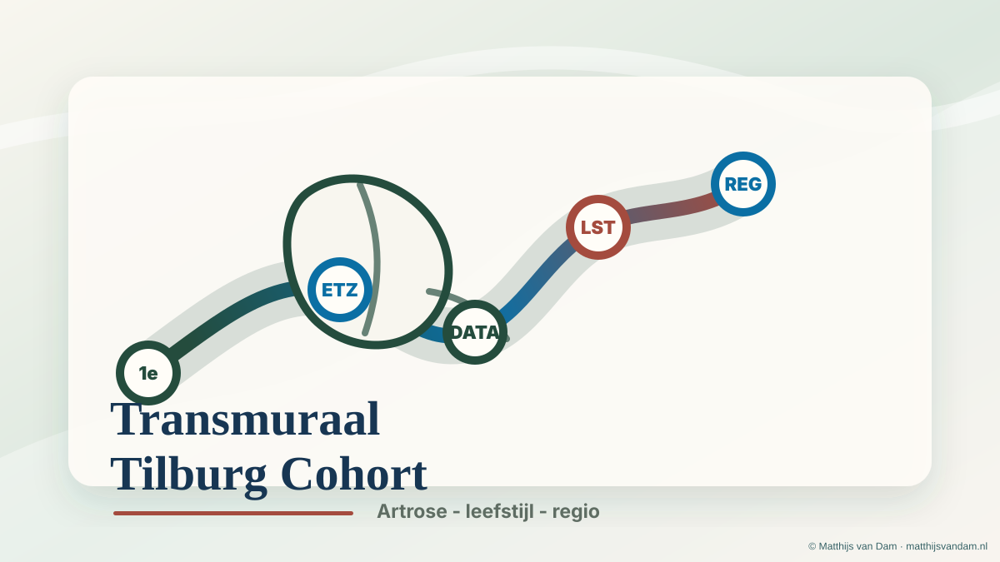

Project
Transmuraal Tilburg Cohort
Een digitaal transmuraal zorgpad voor patiënten met artrose en obesitas, waarin ziekenhuiszorg, leefstijlbegeleiding en ondersteuning in de regio Tilburg beter op elkaar aansluiten.
Wat wordt er opgebouwd?
Het Transmuraal Tilburg Cohort wordt opgebouwd rond een digitaal zorgpad voor mensen met artrose en obesitas. Patiënten krijgen vanuit de polikliniek orthopedie toegang tot informatie, vragenlijsten en verwijzingen via MijnETZ. Tegelijk wordt vastgelegd hoe het zorgpad wordt gebruikt en welke uitkomsten in de praktijk zichtbaar worden.
Het cohort is daarmee meer dan een digitale vragenlijst. Het is een manier om zorg, leefstijlbegeleiding, onderzoek en regionale samenwerking stap voor stap aan elkaar te verbinden.
Waarom dit nodig is
Artrose en obesitas komen vaak samen voor. Die combinatie kan leiden tot meer pijn, minder mobiliteit, een hogere zorgvraag en meer risico's rond een eventuele operatie. In de dagelijkse zorg is ondersteuning vaak verdeeld over ziekenhuis, huisartsenzorg, fysiotherapie, diëtetiek, leefstijlcoaching en het sociaal domein.
Het project onderzoekt hoe die route duidelijker kan worden ingericht, zonder patiënten te reduceren tot gewicht of leefstijl. Het uitgangspunt is passende ondersteuning bij gewrichtsklachten, gezondheid en belastbaarheid.
Hoe het zorgpad werkt
Binnen het digitale zorgpad krijgen patiënten informatie over artrose, herstel, bewegen en leefstijl. Waar passend kan ook worden verwezen naar begeleiding buiten het ziekenhuis, zoals een fysiotherapeut, diëtist, leefstijlcoach, GLI-aanbieder of sport- en beweegcoach in de regio Tilburg.
Onderzoeksvragen
Het project kijkt onder andere naar deelname, gebruik van het digitale zorgpad, tevredenheid, gewicht, pijn, functioneren, kwaliteit van leven, fysieke activiteit en zorgconsumptie. Ook wordt onderzocht welke onderdelen voor patiënten en professionals het meest bijdragen aan succes.
Mede mogelijk gemaakt door
Het Transmuraal Tilburg Cohort wordt mede mogelijk gemaakt door steun van het Heracleum Hulpfonds, een implementatievoucher van de Coalitie Leefstijl in de Zorg en een bijdrage van het Vaillant Fonds. Deze steun helpt om het digitale zorgpad inhoudelijk, technisch en wetenschappelijk verder op te bouwen.
De Heracleum-bijdrage ondersteunt vooral de onderzoeksopzet en dataverzameling. De implementatievoucher van de Leefstijlcoalitie helpt om leefstijlbegeleiding een herkenbare plek te geven in het digitale zorgpad. De bijdrage van het Vaillant Fonds wordt gebruikt voor verdere ontwikkeling van het digitale zorgpad.
Verwachte impact
Voor patiënten kan het zorgpad bijdragen aan duidelijkere informatie en beter afgestemde begeleiding. Voor ziekenhuis en regio kan het project helpen om consulten, verwijzingen en ondersteuning minder versnipperd te organiseren.
Laatste nieuws
Laatste nieuws over dit project
December 2025
Heracleum Hulpfonds kent subsidie toe aan Transmuraal Tilburg Cohort
Over de subsidie voor de onderzoeksopzet en dataverzameling binnen het cohort.
Lees nieuwsbericht
Augustus 2025
Leefstijlcoalitie-voucher voor digitale artrosezorg
Over de implementatievoucher voor een digitale en persoonlijke aanpak rond artrose en obesitas.
Lees nieuwsbericht
2025
Vaillant Fonds ondersteunt verdere ontwikkeling digitaal zorgpad
Over de bijdrage voor de verdere ontwikkeling van het digitale zorgpad binnen het cohort.
Lees nieuwsberichtBronnen: projectinformatie Transmuraal Tilburg Cohort, 2025; Coalitie Leefstijl in de Zorg, implementatievoucher ETZ, 08/2025.